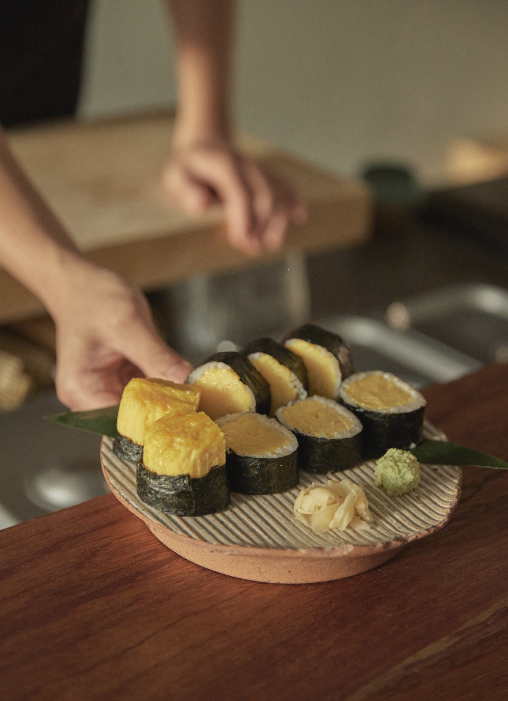

🔗 대구 맛집 목록
📝 맛집 상세 정보
| 대표이미지 | 상호 | 구분 | 평점 | 위치 |
|---|---|---|---|---|
 |
녹양구이 두산동점 | 한식 | 4.24 | 대구 수성구 무학로17길 21 |
|  | 동아식당 | 한식 | 4.55 | 대구 중구 국채보상로125길 14 |
 |
조밀 | 양식 | 4.51 | 대구 중구 달구벌대로 2115-2 1층 조밀 |
| 라일락식탁 | 브런치 | 4.7 | 대구 동구 동부로32길 1 2층 | |
 |
요모 대구본점 | 이자카야 | 4.0 | 대구 동구 효신로5길 85 1층 |